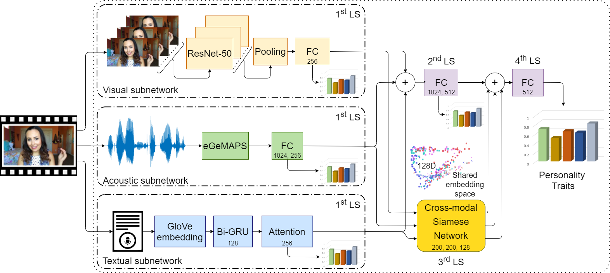
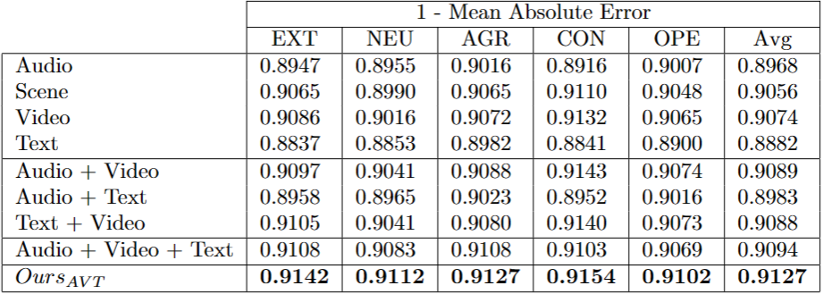

Enhancing Apparent Personality Trait Analysis with Cross-Modal Embeddings
Abstract
Automatic personality trait assessment is essential for high-quality human-machine interactions. Systems capable of human behavior analysis could be used for self-driving cars, medical research, and surveillance, among many others. We present a multimodal deep neural network with a Siamese extension for apparent personality trait prediction trained on short video recordings and exploiting modality invariant embeddings. Acoustic, visual, and textual information are utilized to reach high-performance solutions in this task. Due to the highly centralized target distribution of the analyzed dataset, the changes in the third digit are relevant. Our proposed method addresses the challenge of under-represented extreme values, achieves 0.0033 MAE average improvement, and shows a clear advantage over the baseline multimodal DNN without the introduced module
Task and motivation
Prediction of personality traits is an important task since it is useful for predicting decision-making patterns of people with stable personality traits in diverse situations and detecting changes due to, e.g., stress, drinking, drugs, and so on. One of the most studied model to describe personality is the Big Five personality traits. The theory identifies five factors: EXTraversion, NEUroticism, AGReeableness, CONscientiousness, and OPEnness. Each personality trait represents a range bounded by two extremes, e.g., for extraversion, the two ends are extreme extraversion and extreme introversion.
Although multimodal systems offer advantages compared to monomodal systems, they raise several challenges as well. For example, one faces the problems of selecting from the modalities to be included into multimodal systems, deriving the architecture to fuse them, and attenuating errors from noisy, missing, or underrepresented data. One specific characteristic of the First Impression V2 database is its unbalanced data distribution with fewer extreme samples. However, these examples have much more significance and have priority in several use cases, including medication.
Proposed method
We propose a general-purpose learning framework to extract modality-invariant embeddings from multiple information sources with a Siamese network, emphasizing extreme examples and implicitly improving the multimodal fusion process.
We extended the Multi-Similarity loss to handle multiple apparent personality trait class labels simultaneously, besides using various input modalities. The problem with nonextreme examples that one or more modalities contain inadequate information to aid the deep embedding process. To overcome this issue, we modified the sample selection of the so called "online hard example mining procedure" of the triplet loss evaluation and put the emphasis onto the extreme samples to be detailed in the paper.
Although samples having lower or higher personality trait values are less frequent in the database, high quality prediction of their values is desired in various situations. We show that cross-modal embedding enhances the prediction of the Big Five personality traits in the extreme cases.
Results
Audio-visual personality trait prediction has become of high-interest due to high-quality databases released in the ChaLearn challenges, i.e., in First Impressions V1 and V2. In this study, we used the extended and revised dataset (V2). The dataset contains 10,000 video clips extracted from more than 3,000 different YouTube high-definition videos of people mostly facing and speaking to a camera.
Examples of the First Impression V2 dataset. For each video the ground truth Big Five scores are provided. For each trait, the first two samples instantiate the high extremes, and the last two examples demonstrate the low extremes of a given trait.
One specialty of this dataset is that the target variables have unbalanced data distribution. The regression-to-the-mean problem is emphasized because the scores follow a Gaussian distribution, and the optimization process likely produces predictions near the mean of ground truth values to minimize the loss. We alleviated this problem with the Bell loss, which is similar to the Mean Squared Error, however, it can produce higher gradients when the prediction is closer to the ground truth.

Annotation regarding the First Impressions V2 dataset consists of 5 continuous variables. Samples can be grouped into different classes by splitting the [0, 1] interval to equal, smaller intervals. In this work, we aim to differentiate extreme examples from ordinary samples based on the ground truth values. We determine 4 classes per trait, and we are focusing on the two extremes, which can be monitored in various clinical sessions later on: the low-extreme and high-extreme classes, which are labeled as C1 and C4, respectively.
We transformed the acoustic, visual, and textual features to a shared coordinate space with a Siamese network. The figure shows a two-component Principal Component Analysis (PCA) calculated on the multimodal inputs as visualization, using only the NEUroticism ground truth values and trait classes within plots.
The four personality classes are represented with colors, where the blue is the low extreme (C1), and the red is the high extreme class (C4). In the (b) and (c), we emphasize embeddings within the two extreme poles of NEUroticism.
We performed an ablation study with the used modalities to measure the added values of information sources. For the sake of comparison, a prior model obtained directly from the training labels (by averaging) on this dataset was capable of obtaining close to 0.88 of R_acc at test stage due to the highly centralized distribution. In turn, changes in the third digit are relevant.
The table indicates that the video modality contains the most information, with an average score of 0.9074. Apparent personality traits can be determined accurately using only a single frame: 0.9056 score over the test set strengthens the statement of trait assignment among human observers can be as fast as 100ms.
The bi-modal systems produce a clear performance jump in every single case compared to the monomodal configurations. Furthermore, the "Audio + Video + Text" model performed the expected best result: the different modalities supplement each other.
Thus, we can fairly compare the proposed method to the "Audio + Video + Text" baseline. The table shows that our method performs more superior overall, emphasizing the improvement produced by cross-modal embeddings from 0.9094 to 0.9127.
To our best knowledge, this is the first work that introduces cross-modal embedding for per- sonality trait prediction. The proposed learning framework is far from perfect. It could be further developed, which is planned for future works.
BibTex
@article{fodor2021siamese,
author = {Ádám Fodor, Rachid R. Saboundji, András Lőrincz},
title = {Enhancing Apparent Personality Trait Analysis with Cross-Modal Embeddings},
journal = {Annales Universitatis Scientiarium Budapestinensis de Rolando Eötvös Nominatae. Sectio Computatorica, MaCS 2020 Special Issue},
pages = {1-14},
year = {2021}
}